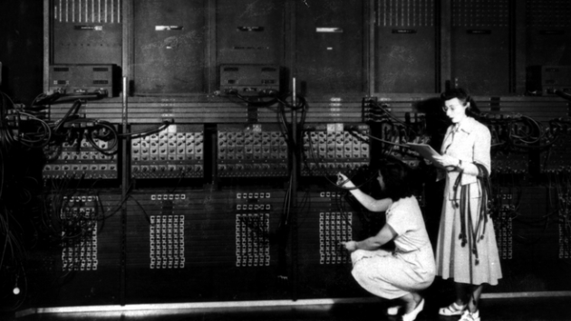
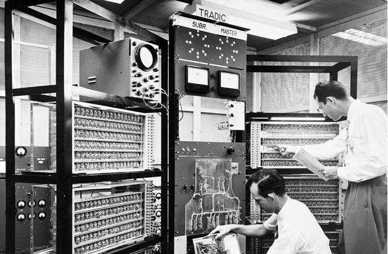
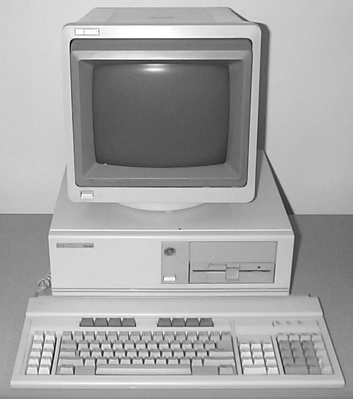

ORIGEM
A evolução dos computadores acompanhou a evolução da sociedade durante os séculos século XX e XXI. Entretanto, a história do computador não teve início apenas na modernidade. A palavra “computador” vem do verbo “computar” que, por sua vez, significa “calcular”. Sendo assim, podemos pensar que a criação de computadores começa na idade antiga, já que a relação de contar já intrigava os indexns. Dessa forma, uma das primeiras máquinas de computar foi o “ábaco”, instrumento mecânico de origem chinesa criado no século V a.C.
EVOLUÇÃO DOS COMPUTADORES
O computador, tal qual conhecemos hoje, passou por diversas transformações e foi se aperfeiçoando ao longo do tempo, acompanhando o avanço das áreas da matemática, engenharia, eletrônica. É por isso que não existe somente um inventor. De acordo com os sistemas e ferramentas utilizados, a história da computação está dividida em quatro períodos.
PRIMEIRA GERAÇÃO (1951-1959)
Os computadores de primeira geração funcionavam por meio de circuitos e válvulas eletrônicas. Possuíam o uso restrito, além de serem imensos e consumirem muita energia. Um exemplo é o ENIAC (Eletronic Numerical Integrator and Computer) que consumia cerca de 200 quilowatts e possuía 19.000 válvulas.
SEGUNDA GERAÇÃO (1959-1965)
Ainda com dimensões muito grandes, os computadores da segunda geração funcionavam por meio de transistores, os quais substituíram as válvulas que eram maiores e mais lentas. Nesse período já começam a se espalhar o uso comercial.
TERCEIRA GERAÇÃO (1965-1975)
Os computadores da terceira geração funcionavam por circuitos integrados. Esses substituíram os transistores e já apresentavam uma dimensão menor e maior capacidade de processamento. Foi nesse período que os chips foram criados e a utilização de computadores pessoais começou.
QUARTA GERAÇÃO (1975-ATUALMENTE)
Com o desenvolvimento da tecnologia da informação, os computadores diminuem de tamanho, aumentam a velocidade e capacidade de processamento de dados. São incluídos os microprocessadores com gasto cada vez menor de energia.
Nesse período, mais precisamente a partir da década de 90, há uma grande expansão dos computadores pessoais.
Além disso, surgem os softwares integrados e a partir da virada do milênio, começam a surgir os "computadores de mão", ou seja, os smartphones, iPods, iPads e tablets, que incluem conexão móvel com navegação na web.
Alguns estudiosos preferem acrescentar a “Quinta Geração de Computadores” com o aparecimento dos supercomputadores, utilizados por grandes corporações como a NASA.


© Void Co. 2018, Sobre VOID | Contato